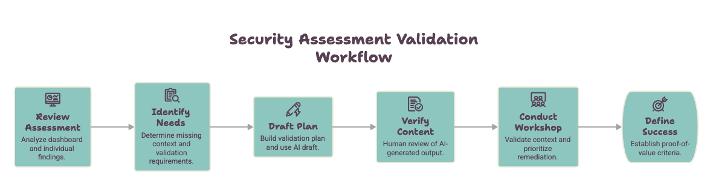
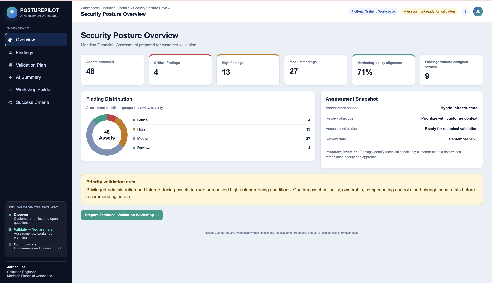
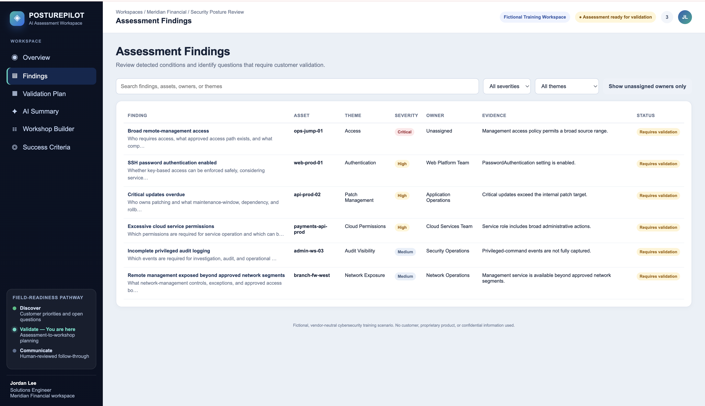
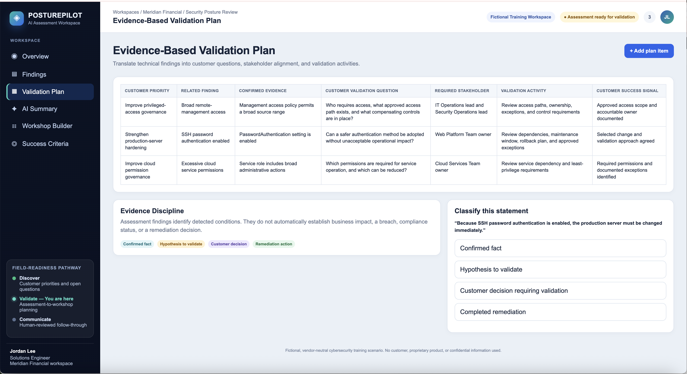
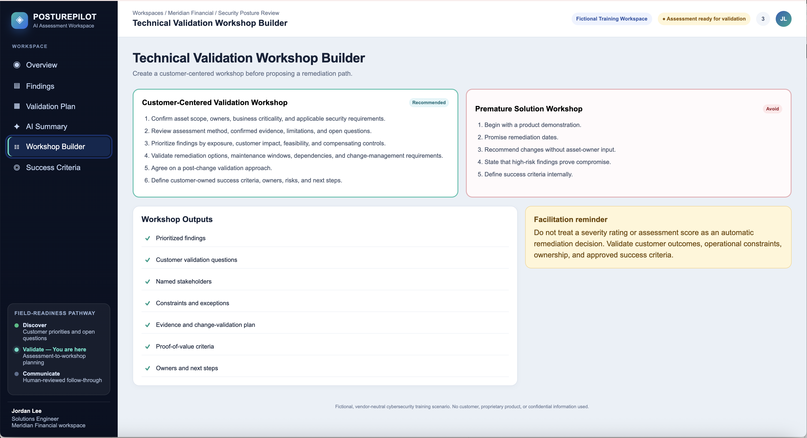
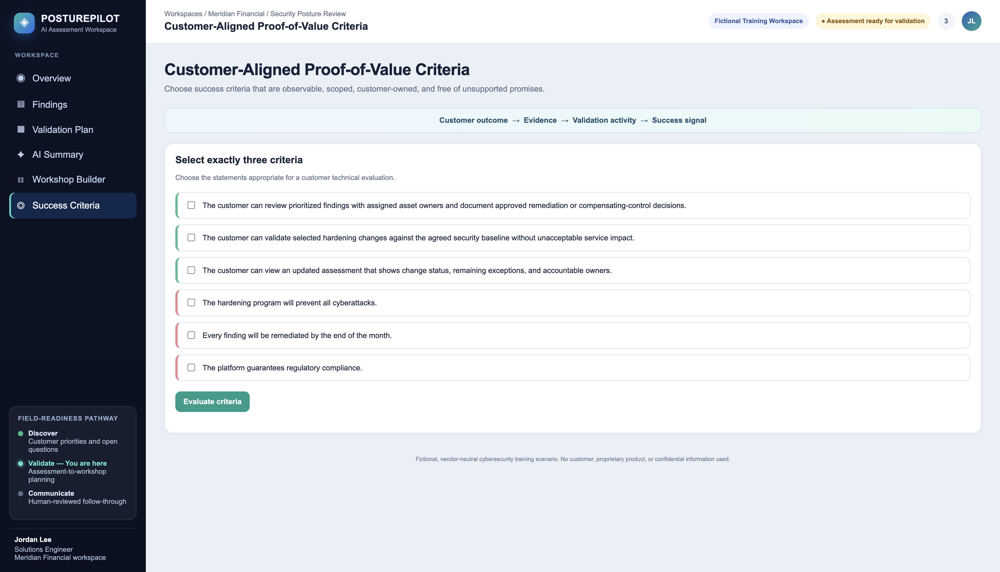

You are a Sales engineer. After a discovery call, you are reviewing the security report with technical details. Learn what the report shows, what you still need to ask, and how to plan a safe next step. This module helps you turn one finding into a clear, customer-centered conversation plan.
By the end, you will be able to
Explain what a security finding tells you and what it does not tell you.
Identify the people, questions, and work limits you need to know before suggesting a next step.
Create a short plan with a fact, a customer question, a test activity, and a clear sign of success.
Spot AI-written statements that are not supported by the facts or make promises too soon.
Choose simple success checks that the customer can see and confirm.
Key ideas
Use the facts carefully
A security check can find a setting that may need attention. It gives you a place to start. It does not tell you everything you need to know before making a change.
Fact from the report
Something the security check clearly shows.
Example: “The access rule allows a broad group of networks.”
Question for the customer
Something you still need to learn.
Example: “Which people and networks need access?”
Possible concern
Something that may be true, but needs more information.
Example: “This may make unwanted admin access easier.”
Customer decision
A choice the customer must approve.
Example: “Limit access during an approved maintenance window.”
Unsupported statement
Something the report does not prove.
Example: “The customer has been hacked.”
Workflow
Plan the security check conversation
Use these six steps to move from a security finding to a helpful customer meeting. Your goal is to understand the facts, learn what is missing, and agree on how success will be checked.

Use this security assessment validation workflow to prepare for a customer security validation conversation.
Planning question: What does the report clearly show, and what does the customer still need to confirm before you suggest a technical change?
Where to look
See each key step before you begin
These examples show where each important action happens in
PosturePilot. Each screenshot is paired with the task you will
complete in the Meridian Financial practice lab.
Task 1: Review Assessment
Start with the security overview
Use the Security Posture Overview to see the big picture. Look for
higher-risk findings, systems that may need attention, and items that
do not have a clear owner.
Review finding levels and higher-risk systems.
Look for a Critical or High finding that needs discussion.
Check whether the system has a clear owner.
Remember: A Critical finding is a good reason to start
a customer conversation. It does not prove business harm or approve a
change.

Start here. Use the overview to find a security finding that needs a
customer conversation.
Task 2: Identify Needs
Open the finding and list what you still need to ask
Open the finding to see what the report clearly shows. Then separate
that fact from the questions Meridian Financial still needs to answer.
Start with the fact from the report.
Identify who owns the system and who can approve a change.
Ask which admins, networks, vendors, and work steps need access.
Identify testing, timing, and backup-plan needs.
Fact from the report: The admin-access rule allows a
broad range of networks.
Still unknown: Who needs access, who owns the system,
what work depends on it, and whether it is safe to make a change now.

The report gives you a fact to discuss. The customer provides the
missing context needed before a recommendation is made.
Task 3
Build the customer plan
The Validation Plan is the main work product in this module. It
turns a technical fact into a clear customer conversation.
Keep the report fact separate from guesses.
Add the question the customer needs to answer.
Name the people who can answer it.
Plan a small, approved test and a clear success check.
Goal: Approved admins can still get in, while
unapproved networks cannot, within the agreed scope.

Highlight the fact, customer question, people to involve, test
activity, and success check.
Task 4
Check AI-written notes before sharing
AI can help create a first draft. You still need to check the
facts and remove statements that make promises for the customer.
Flag claims that say a breach happened without proof.
Remove unapproved dates, fixes, and promises.
Keep facts from the report and helpful customer questions.
Keep: “The report found that the admin-access
rule allows a broad range of networks.”

Show at least one unsupported statement marked “Flag” and one
fact-based statement marked “Keep.”
Tasks 5 and 6
Finish with a meeting plan and success checks
End with a meeting plan that helps the customer decide what to do
next. Agree on a test and simple signs that the test worked.
Confirm the meeting goal, people, and limits.
Review facts, owners, work dependencies, and current safety controls.
Agree on a small test and how to return to the old setting if needed.
Choose success checks the customer can see and confirm.
Close the loop: End with clear owners, a test
plan, and success checks—not a promise that every security risk
is gone.

Show meeting agenda items on one side and customer success checks
on the other.
Practice story
Meridian Financial
Meridian Financial is a made-up financial-services company. It uses systems in its offices and in the cloud.
What the customer shared
Different teams do not review security settings in the same way.
It is not always clear who owns higher-risk systems.
Teams need a better way to decide which security findings to discuss first.
What has not been approved
A setting change or fix.
A product, service, price, or contract.
A production change or due date.
A promised business result.
Main finding for this practice
Start with one clear fact. Ask the customer for the rest of the story.
FindingBroad remote-management access
Systemops-jump-01
LevelCritical
What the report showsThe admin-access rule allows a broad range of networks.
What the report does not tell you
Who owns the system.
Which admins, networks, vendors, or work steps need access.
Whether the system supports important business or emergency work.
Whether other safety controls or approved exceptions already exist.
Whether it is safe to change the access rule now.
Whether anyone has used this access in a harmful way.
Meridian Financial Practice Lab
Use the six tasks below to turn one fact from the report into a simple plan for a customer conversation. Mark each task complete as you work.
Look at the dashboard. Review risk levels, systems that may need attention, systems without a clear owner, and areas that need more discussion.
Choose: Broad remote-management access on ops-jump-01 — Critical
A Critical finding is a good reason to start a conversation. It does not prove business harm or give permission to make a change.
2Identify Needs⌄
PosturePilot area: Assessment Findings
Separate the fact from the questions
Fact from the report: The admin-access rule allows a broad range of networks.
Ask the customer:
Who owns this system and who can approve an access-rule change?
Which admins, networks, vendors, and emergency work steps need access?
What business or support work depends on this access?
Which safety controls or approved exceptions already exist?
When could a change be tested, and how could the team return to the old setting if needed?
Helpful question: “Which access paths are approved and needed for daily work, support work, and emergencies?”
Do not say the customer was hacked, harmed, noncompliant, or needs an immediate fix unless you have clear proof.
3Draft Plan⌄
PosturePilot area: Validation Plan
Make a short customer plan
Connect the fact in the report to a customer question, a safe test, and a clear sign of success.
Why discuss this now?
Confirm access needs before thinking about a small access-rule change.
Fact from the report
The access rule allows a broad range of networks.
Question for the customer
Which access paths are approved and needed for daily work, support work, and emergencies?
People to involve
Security, infrastructure, network, identity, system owner, and change-management teams.
Test activity
List required access paths; test a small change during an approved time; keep a way to return to the old setting.
What success looks like
Approved admins can still get in, while unapproved networks cannot, within the agreed scope.
A good plan connects a fact to a customer-approved test. It does not tell the customer to make a change before the right people review it.
4Check AI Content⌄
PosturePilot area: AI Workshop Brief
Check the AI-written notes
Read the AI-written meeting summary before anyone shares it. Flag statements that are not supported by the report or that make promises for Meridian Financial.
Flag statements that:
Say or suggest that someone broke into the system.
Promise less risk, full compliance, or no future attacks.
Assume who owns the system or who will approve a change.
Promise a fix, product, purchase, timeline, or business result.
Treat a possible concern as a proven fact.
Keep this fact-based statement: “The report found that the admin-access rule for ops-jump-01 allows a broad range of networks.”
AI can help with a first draft. You are still responsible for checking the facts, protecting private information, and avoiding promises the customer has not approved.
5Plan the Workshop⌄
PosturePilot area: Workshop Planning
Choose a meeting plan that checks the facts first
Agree on the goal, who is in the meeting, what is included, and what decision is not being made today.
Review what the report shows, what it does not show, and what questions are still open.
Confirm the owner, work that depends on the system, current safety controls, and limits.
Decide with the customer how important this finding is.
Talk about possible options, testing, and how to undo a change if needed.
Agree on the test work, what success looks like, who owns each next step, and what happens next.
A good technical meeting helps the customer make an informed choice. It does not make the choice for them.
6Define Success⌄
PosturePilot area: Proof of Value
Choose three clear success checks
Choose success checks that the customer can see, test, and agree with.
The customer confirms which networks, admins, and support work steps need access to ops-jump-01.
The customer checks that approved admins can still get needed access after a small, approved access-rule change.
The customer checks that unapproved networks cannot get access after the agreed change.
The customer records the scope, owner, test results, backup plan, and final result.
The customer checks whether the chosen setting matches its approved access rule or approved exception.
Do not choose statements that promise to: remove all cyber risk, stop every future attack, guarantee compliance, finish work by an unapproved date, or prove that no breach happened.
Good success checks describe what the customer can see after an agreed test. They do not promise more than the team can prove.
Lab complete
You used the report to make a customer-centered plan for a technical conversation.
Field-ready principle: The report starts the conversation. Customer answers help the team make a safe, informed decision.